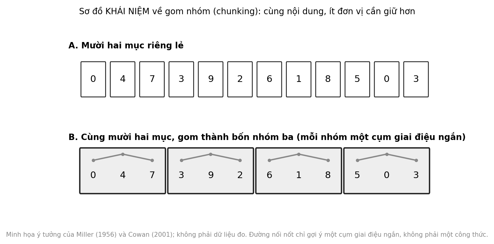

3 Giai điệu tổ chức ký ức
Một người ông ngồi lặng bên cửa sổ. Ông không gọi được tên đứa cháu đang ngồi cạnh. Nhưng khi ai đó ngân khẽ một câu hát ru cũ, ông hát theo trọn câu, đúng từng chữ. Những cảnh như vậy được kể lại trong nhiều ghi chép lâm sàng và hồi ký. Chúng khiến người chứng kiến xúc động, và cũng dễ khiến họ kết luận quá nhanh.
Câu hỏi trung tâm
Giai điệu giúp gom và lưu thông tin theo cách nào, và giới hạn của hiệu ứng ấy ở người khỏe mạnh cũng như ở người sa sút trí tuệ là gì? Chương này tách hai điều thường bị nhập làm một: giai điệu như một công cụ ghi nhớ trong những nhiệm vụ cụ thể, và âm nhạc như một cách ở bên người bệnh. Cả hai đáng giá, nhưng bằng chứng cho từng điều rất khác nhau. Giai điệu là một công cụ trí nhớ có điều kiện, còn âm nhạc không chữa được bệnh sa sút trí tuệ.
Chương đi theo năm bước: gom nhóm và trí nhớ làm việc, giai điệu và việc nhớ lời, các dạng trí nhớ, trường hợp bệnh Alzheimer đọc theo bốn bước, và cách đưa phần có cơ sở vào lớp học. Ở mỗi bước, chúng ta sẽ hỏi cùng một câu: bằng chứng này đo điều gì, ở ai, trong điều kiện nào.
1. Gom nhóm và trí nhớ làm việc
Trí nhớ làm việc là phần trí nhớ giữ ngắn hạn những gì ta đang xử lý, chẳng hạn một số điện thoại vừa nghe hay một chuỗi các bước vừa được hướng dẫn. Điều đáng chú ý là dung lượng của nó thường được tính bằng nhóm chứ không phải bằng từng chữ. Gom nhóm (chunking) là việc gộp nhiều mục riêng lẻ thành một đơn vị có nghĩa, như khi ta đọc một số điện thoại thành ba cụm bốn–ba–ba thay vì mười chữ số rời.
Cũng như vậy, ta thường nhớ một năm như một con số thay vì bốn chữ số, và nhớ một câu quen thuộc như một khối thay vì từng âm tiết. Một giáo viên có thể thấy gom nhóm khi học sinh đọc thuộc một bài thơ: các em không nhớ từng từ riêng lẻ mà nhớ theo dòng và theo vần.
Từ góc nhìn của người dạy, điều này đổi cách đặt câu hỏi. Thay vì hỏi “bao nhiêu thứ học sinh có thể nhớ”, ta hỏi “có thể gom chúng thành mấy nhóm có nghĩa”. Cùng một lượng nội dung có thể vừa với trí nhớ làm việc của học sinh hoặc vượt quá nó, tùy cách trình bày.
Bài báo kinh điển của Miller thường được tóm tắt thành “bảy cộng trừ hai”, nhưng điểm cốt lõi của nó là đơn vị đếm: dung lượng giới hạn tính theo số nhóm, và ta có thể tăng lượng thông tin giữ được bằng cách mã hóa lại thành những nhóm lớn hơn Giả thuyết (Miller, 1956). Về sau, Cowan lập luận rằng khi ngăn được việc nhẩm lại và gom nhóm, dung lượng thật sự nhỏ hơn nhiều, vào khoảng bốn nhóm; con số bảy phản ánh phần nào việc gom nhóm và nhẩm lại chứ không phải một giới hạn cứng Sơ bộ (Cowan, 2001). Cuộc tranh luận về con số chính xác vẫn còn, và chúng ta không cần chọn một con số để rút ra điều thực dụng: số đơn vị cần giữ cùng lúc là nhỏ, và nhóm lại giúp ích.
Một tổng quan ngắn của Cowan nhắc lại rằng giới hạn này tồn tại bất kể cách đo, nhưng con số phụ thuộc vào việc người tham gia có cơ hội nhẩm lại hoặc gom nhóm hay không Sơ bộ (Cowan, 2010). Với giáo viên, hệ quả là một lời hướng dẫn gồm sáu hay bảy bước liên tiếp vượt quá những gì một học sinh giữ được nếu chúng không được gom lại, và một nhóm ba hoặc bốn bước dễ giữ hơn nhiều.
Một tổng quan về các cơ chế gom nhóm trong học tập mô tả nó như một quá trình diễn ra ở nhiều lĩnh vực, từ trò chơi cờ đến ngôn ngữ, và gắn nó với chuyên môn: người có kinh nghiệm nhìn thấy các nhóm lớn mà người mới thấy là các mục rời Sơ bộ (Gobet và c.s., 2001). Một khung lý thuyết về trí nhớ làm việc đề xuất một “bộ đệm giai thoại” có dung lượng giới hạn, nơi thông tin từ nhiều nguồn được kết lại thành các nhóm mạch lạc Giả thuyết (Baddeley, 2000). Cả hai giúp ta hình dung vì sao một cấu trúc bên ngoài, như vần điệu hay giai điệu, có thể hỗ trợ việc gom nhóm.
Cần phân biệt giữa việc giữ một chuỗi trong vài chục giây và việc nhớ nó lâu dài. Gom nhóm chủ yếu giúp việc đầu. Để chuỗi đi vào trí nhớ dài hạn, cần lặp lại, hiểu nghĩa và dùng lại nhiều lần, những điều giai điệu không thay thế được.
Cũng cần tách hai loại chuyển giao. Chuyển giao gần là khi điều đã luyện giúp ích cho một nhiệm vụ rất giống, chẳng hạn học một danh sách bằng giai điệu rồi nhớ lại chính danh sách ấy. Chuyển giao xa là khi điều đã luyện giúp ích cho nhiệm vụ khác hẳn, chẳng hạn học hát để cải thiện điểm toán. Trong chương này, hầu hết bằng chứng cho giai điệu là chuyển giao gần. Khi một lời khẳng định về âm nhạc và trí nhớ không nói rõ nó thuộc loại nào, đó là dấu hiệu nên đọc chậm lại.
2. Giai điệu và việc nhớ lời
Nếu giai điệu giúp gom nhóm, ta kỳ vọng văn bản được hát sẽ dễ nhớ hơn văn bản được đọc. Bằng chứng ủng hộ kỳ vọng này, nhưng kèm điều kiện đáng kể.
Trong một loạt thí nghiệm kinh điển, người tham gia nhớ lời được hát tốt hơn lời được đọc, nhất là sau vài lần lặp lại và khi giai điệu đơn giản và lặp lại giữa các đoạn Sơ bộ (Wallace, 1994). Một thí nghiệm khác cho thấy học một văn bản không liên kết với một giai điệu quen thuộc giúp nhớ lại văn bản ấy sau một tuần tốt hơn so với đọc Sơ bộ (Rainey & Larsen, 2002). Một nghiên cứu so sánh dạng hát và dạng nói ở nhiều khoảng thời gian ghi nhận lợi thế của dạng hát, nhiều khả năng rõ nhất ở trí nhớ dài hạn Sơ bộ (Calvert & Tart, 1993). Kết quả không đồng đều: ở một nghiên cứu về văn bản và bài hát, mức hưởng lợi phụ thuộc vào việc người học có được đào tạo âm nhạc hay không và vào tốc độ trình bày Sơ bộ (Kilgour và c.s., 2000).
Về học ngôn ngữ, một thí nghiệm cho người lớn nghe một dòng âm tiết của ngôn ngữ nhân tạo, được đọc hoặc được hát; khi được hát, người tham gia tách và học các từ tốt hơn, cả ở thước đo hành vi lẫn ở phản ứng điện não Sơ bộ (Schön và c.s., 2008). Giai điệu ở đây đóng vai trò đánh dấu ranh giới giữa các từ, điều rất gần với ý tưởng gom nhóm.
Với ngoại ngữ, một nghiên cứu về việc học cụm từ cho thấy học bằng cách hát có xu hướng giúp nhớ nhiều cụm hơn so với học bằng cách đọc Sơ bộ (Good và c.s., 2015). Cả hai kết quả này cho thấy giai điệu có thể giúp ở những nhiệm vụ mà ranh giới và thứ tự là phần khó nhất: tách từ trong một dòng âm thanh liên tục, nhớ đúng thứ tự một chuỗi.
Một tổng quan về lợi ích của âm nhạc đối với học và nhớ lời kết luận rằng lợi ích có thật nhưng phụ thuộc vào điều kiện: giai điệu cần phù hợp với cấu trúc của văn bản, đủ đơn giản và được lặp lại, và hiệu ứng khác nhau theo nhiệm vụ và người học Sơ bộ (Ferreri & Verga, 2016).
Có một điểm các nghiên cứu hiếm khi tách riêng: lợi ích đến từ giai điệu, từ nhịp, từ vần hay từ chính việc lặp lại. Một câu hát có đủ cả bốn thứ, nên khi nó giúp nhớ, ta chưa biết thứ nào làm việc. Điều này quan trọng với giáo viên, vì một câu vần có nhịp rõ có thể cho hiệu quả tương tự mà không cần ai phải đặt giai điệu.
Áp dụng các câu hỏi đánh giá bằng chứng cho nhóm nghiên cứu này. Về thiết kế, phần lớn là thí nghiệm ngắn, nhiều thí nghiệm ở phòng thí nghiệm với sinh viên đại học. Về nhóm so sánh, nhóm đọc là đối chứng hợp lý nhưng không loại trừ việc nhạc làm người học chú ý hơn hoặc ít chán hơn. Về kết quả đo, đó là nhớ lại văn bản đã học, chuyển giao gần. Về quần thể, người tham gia là người lớn nói các ngôn ngữ không có thanh điệu, nên chưa chắc áp dụng được cho học sinh Việt Nam học lời bằng tiếng Việt. Vì những lý do đó, chúng ta giữ nhãn Sơ bộ cho cả nhóm, dù số lượng nghiên cứu khá lớn. Từ đó chúng ta có thể giữ lại một mệnh đề thận trọng: giai điệu hỗ trợ việc gắn kết và lưu giữ thông tin theo chuỗi. Mệnh đề này giải mã thành ba điều. Giai điệu cung cấp những dấu hiệu ngắt nhóm và thứ tự, như đường nét cao độ và nhịp, để các mục đi cùng nhau. Hiệu quả được thấy ở những nhiệm vụ cụ thể, như nhớ lời và tách từ trong ngôn ngữ mới, thường sau khi lặp lại. Và đó là chuyển giao gần, từ nhiệm vụ đã luyện sang nhiệm vụ tương tự; mệnh đề không nói rằng giai điệu cải thiện trí nhớ nói chung, hay làm trẻ học giỏi hơn ở mọi môn.
Một lưu ý riêng cho tiếng Việt, ngôn ngữ có thanh điệu: khi đặt lời vào một giai điệu, đường nét cao độ của giai điệu có thể trùng hoặc lệch với thanh điệu của từ. Chúng ta sẽ xem bằng chứng ở Chương 5; ở đây chỉ cần lưu ý rằng một câu hát dễ nhớ chưa chắc là một câu hát dễ nghe rõ lời.
3. Các dạng trí nhớ và vì sao nhạc quen thuộc có thể “ở lại”
Để hiểu vì sao một số người sa sút trí tuệ vẫn nhận ra và hát được bài quen, cần phân biệt vài dạng trí nhớ. Trí nhớ thủ tục (procedural) lưu cách làm một việc, như đạp xe hay ngân một câu hát đã thuộc. Trí nhớ ngữ nghĩa lưu kiến thức, như biết rằng một giai điệu thuộc về một bài hát nào đó. Trí nhớ giai thoại (episodic) lưu các sự kiện của chính ta, như lần ta nghe bài hát ấy ở đám cưới của ai. Một tổng quan về các hệ thống trí nhớ của não mô tả những dạng này như các hệ tương đối độc lập, bị ảnh hưởng khác nhau bởi tổn thương não Giả thuyết (Squire, 2004). Âm nhạc quen thuộc có thể huy động cả ba dạng, và một số bệnh làm hỏng chúng không đồng đều.
Một tổng quan về trí nhớ âm nhạc trong bệnh Alzheimer kết luận rằng khả năng nhận ra và nhớ nhạc quen thuộc được bảo tồn tương đối so với nhiều dạng trí nhớ khác, nhưng bằng chứng đến từ các ca đơn lẻ và nhóm nhỏ và cần được đọc thận trọng Sơ bộ (Baird & Samson, 2009). Một báo cáo ca và phân tích đi kèm cũng cho thấy một người mắc Alzheimer vẫn nhận ra nhạc quen thuộc, và bàn về cách đánh giá khả năng này Sơ bộ (Cuddy & Duffin, 2005). Trong một thí nghiệm nhỏ, những người mắc Alzheimer nhận ra lời bài hát tốt hơn khi lời được hát so với khi được đọc, còn nhóm đối chứng cao tuổi thì không khác biệt Sơ bộ (Simmons-Stern và c.s., 2010). Điều này nhất quán với việc giai điệu có thể là một dấu hiệu gợi nhớ, nhưng là kết quả từ một mẫu nhỏ.
Các thí nghiệm khác đi cùng hướng. Một nghiên cứu cho thấy cả người cao tuổi khỏe mạnh lẫn người mắc Alzheimer giai đoạn nhẹ giữ lại lời được học qua hát tốt hơn lời được học qua đọc Sơ bộ (Moussard và c.s., 2014). Một nghiên cứu khác cho thấy học nội dung bằng lời cùng với nhạc có thể hỗ trợ trí nhớ giai thoại ở người mắc Alzheimer Sơ bộ (Palisson và c.s., 2015). Một tổng quan các cách tiếp cận dùng âm nhạc trong Alzheimer ghi nhận một số lợi ích nhưng cũng nhấn mạnh sự không đồng nhất giữa các nghiên cứu về cách làm, thời lượng và chỉ số đo Sơ bộ (Leggieri và c.s., 2019).
Về cơ chế, một nghiên cứu chụp não ở người mắc Alzheimer và người đối chứng cho thấy những vùng gắn với việc nhận ra nhạc quen thuộc có vẻ ít bị teo và ít giảm chuyển hóa hơn các vùng khác Sơ bộ (Jacobsen và c.s., 2015). Một giải thích khả dĩ là nhạc quen thuộc được mã hóa nhiều lần trong suốt đời, gắn với cảm xúc và vận động, nên phụ thuộc ít vào mạng lưới mà bệnh phá hủy sớm nhất; đây là giả thuyết cần kiểm chứng chứ chưa phải cơ chế đã xác lập Giả thuyết (Baird & Samson, 2009; Jacobsen và c.s., 2015). Mức độ quen thuộc cũng có vai trò: nhạc quen thuộc được nhận ra và ưa thích hơn nhạc lạ, một hiệu ứng được thấy ở cả người khỏe mạnh Sơ bộ (Peretz và c.s., 1998).
Điều này gợi ý một nguyên tắc thực hành khá rõ: nếu dùng nhạc với một người lớn tuổi, bài hát nên là bài chính họ biết và thích, chứ không phải bài ta nghĩ là “tốt cho trí nhớ”.
Cũng cần thận trọng với chữ “bảo tồn”. Nó có nghĩa là tương đối, so với các dạng trí nhớ khác, chứ không phải nguyên vẹn. Mức độ này khác nhau giữa người này với người kia và giữa các giai đoạn bệnh, và có thể phụ thuộc vào việc người ấy từng học nhạc hay gắn bó với bài hát đến đâu. Người ở bên không nên kỳ vọng rằng một bài hát sẽ mở được lối vào mỗi lần. Nó cũng nhắc rằng những bài từng gắn với một ký ức đau buồn có thể gợi lên cảm xúc khó chịu, nên người ở bên cần quan sát phản ứng và sẵn sàng dừng lại Thực tiễn sư phạm.
4. Trường hợp Alzheimer: điều nó cho thấy và điều nó không cho thấy
Oliver Sacks mô tả nhiều trường hợp trong đó âm nhạc dường như mở ra một lối vào người bệnh mà ngôn ngữ thường ngày không còn mở được (Sacks, 2007). Cách đọc hợp lý một ghi chép như vậy là qua bốn bước.
Thứ nhất, cơ chế mà ca này minh họa: nhạc quen thuộc có thể vẫn được nhận ra và hát theo khi nhiều dạng trí nhớ khác đã suy giảm, có thể vì sự mã hóa lặp lại, cảm xúc và vận động ở mục 3. Thứ hai, điều nó không cho thấy. Nó không cho thấy âm nhạc chữa được bệnh, không cho thấy trí nhớ nói chung được phục hồi, và không cho thấy điều này đúng với mọi người hay mọi giai đoạn. Những ghi chép được kể lại thường là những ghi chép đáng nhớ nhất, nên chúng có thể không đại diện. Một khoảnh khắc nhận ra nhau qua một bài hát là có thật và đáng quý, nhưng nó không phải là một kết quả điều trị. Thứ ba, bằng chứng hệ thống tốt nhất. Thứ tư, cách chuyển sang bối cảnh gia đình hay lớp học mà không hứa hẹn điều trị.
Cách mô tả cũng quan trọng về mặt phẩm giá. Người bệnh trong những ghi chép này còn nhiều năng lực: họ nhận ra, hát, vui, nhớ một số điều. Hãy mô tả điều họ làm được thay vì chỉ kể những gì họ đã mất, và đừng biến họ thành bằng chứng cho một thông điệp mà họ không chọn.
Về bằng chứng hệ thống, một thử nghiệm đối chứng ngẫu nhiên với 89 cặp người bệnh và người chăm sóc, kéo dài mười tuần, so sánh các buổi hát và nghe nhạc với chăm sóc thông thường. Các tác giả báo cáo cải thiện về tâm trạng, định hướng và trí nhớ giai thoại xa, và ở mức thấp hơn về chú ý, chức năng điều hành và nhận thức chung; hát còn gắn với cải thiện trí nhớ làm việc bằng lời và với sức khỏe tinh thần của người chăm sóc Sơ bộ (Särkämö và c.s., 2014). Chúng ta chưa lấy được kích thước hiệu ứng từ bài báo này. Một phân tích sau đó trên cùng dữ liệu cho biết hiệu quả khác nhau theo giai đoạn bệnh, tuổi và loại hoạt động: hát gắn với lợi ích về trí nhớ làm việc, chức năng điều hành và định hướng chủ yếu ở người bệnh nhẹ và trẻ tuổi hơn, còn nghe nhạc gắn với lợi ích nhận thức ở người bệnh nặng hơn Sơ bộ (Särkämö và c.s., 2016). Vì là phân tích thăm dò trên một thử nghiệm, kết quả này nên được coi là gợi ý cho nghiên cứu tiếp theo, không phải khuyến nghị.
Một thử nghiệm đơn lẻ chưa đủ. Phiên bản cập nhật năm 2025 của tổng quan Cochrane, gộp 30 nghiên cứu với 1.720 người tham gia, cho thấy so với chăm sóc thông thường, các can thiệp dựa trên âm nhạc có thể cải thiện triệu chứng trầm cảm ở mức nhỏ (SMD = −0,23; KTC 95% [−0,42; −0,04]; 9 nghiên cứu, 441 người; độ tin cậy của bằng chứng trung bình) và có thể cải thiện các vấn đề hành vi nói chung (SMD = −0,31; KTC 95% [−0,60; −0,02]; độ tin cậy thấp). Với nhận thức, kết quả không cho thấy cải thiện có ý nghĩa thống kê (SMD = 0,19; KTC 95% [−0,02; 0,41]; 7 nghiên cứu, 353 người; độ tin cậy thấp đến rất thấp). Nhóm tác giả cũng không thấy tác động kéo dài sau khi can thiệp kết thúc, và nhấn mạnh rằng các nghiên cứu có nguy cơ sai lệch cao vì người tham gia và người thực hiện biết nhóm của mình Trung bình (Steen và c.s., 2025).
Cũng cần nhớ rằng phần lớn người tham gia trong các nghiên cứu được gộp sống trong cơ sở chăm sóc, và nhiều can thiệp là các buổi nhóm có người điều hành. Chúng ta chưa biết kết quả có giống nhau với người được chăm sóc tại nhà bởi người thân, một hoàn cảnh phổ biến ở nhiều gia đình. Hiện chưa có dữ liệu đủ lớn ở Việt Nam về điều này; đây là hướng nghiên cứu ưu tiên.
Hai kết quả này cần được đặt cạnh nhau.
Để đọc các con số trên: SMD là hiệu số chuẩn hóa, cho biết nhóm có can thiệp khác nhóm đối chứng bao nhiêu độ lệch chuẩn; −0,23 ở thang trầm cảm nghĩa là triệu chứng thấp hơn khoảng một phần tư độ lệch chuẩn, một hiệu ứng nhỏ. Mức tin cậy của bằng chứng theo hệ thống GRADE phản ánh việc ta tin đến đâu vào ước lượng, và ở đây nó bị kéo xuống vì người tham gia và người thực hiện không thể mù về nhóm của mình, và vì các nghiên cứu nhỏ và khác nhau. Thử nghiệm đơn lẻ gợi ý lợi ích nhận thức nhỏ; tổng quan hệ thống không xác nhận lợi ích nhận thức, chỉ xác nhận lợi ích nhỏ ở trầm cảm. Vì vậy, điều có cơ sở nhất hiện nay là âm nhạc có thể góp phần vào tâm trạng và các hoạt động chung, trong lúc không có cơ sở để hứa rằng nó làm chậm bệnh hay phục hồi trí nhớ.
Còn về chuyển sang đời sống: một người thân hát cùng người bệnh một bài họ đã thuộc, ở âm lượng vừa phải, trong khoảng thời gian họ thoải mái, là một cách ở bên nhau; nếu việc đó làm người bệnh hay người chăm sóc vui hơn thì đủ để nó có giá trị. Các can thiệp trong các nghiên cứu trên được nhà chuyên môn tổ chức, thường nhiều buổi liên tiếp. Nếu bạn chăm sóc người mắc bệnh sa sút trí tuệ, hãy hỏi bác sĩ hoặc nhà trị liệu âm nhạc được đào tạo trước khi coi các hoạt động tại nhà là biện pháp can thiệp.
5. Học thuộc bằng giai điệu trong lớp học
Từ góc nhìn của giáo viên, phần có thể dùng được ngay là mục 2. Các điều kiện rút ra từ nghiên cứu gợi ý một số nguyên tắc thực hành. Chia nội dung thành các nhóm ngắn, vào khoảng ba hoặc bốn mục, để mỗi nhóm khớp một cụm giai điệu. Giữ giai điệu đơn giản và để cùng một mẫu lặp lại giữa các nhóm. Lặp lại vài lần trước khi kiểm tra. Và luôn kiểm tra việc nhớ khi không có giai điệu, để biết trẻ nhớ nội dung hay chỉ nhớ bài hát.
Một ví dụ cụ thể: để nhớ thứ tự mười hai bước của một quy trình thí nghiệm, giáo viên có thể chia thành bốn nhóm ba bước, đặt cho mỗi nhóm một cụm giai điệu ba nốt giống nhau, và cho cả lớp hát từng nhóm rồi nói lại không giai điệu. Chi phí là vài phút; lợi ích tiềm năng là thứ tự được giữ chắc hơn trong thời gian ngắn. Nó không thay việc giải thích vì sao các bước theo thứ tự ấy.
Có hai rủi ro. Một là giai điệu trở thành chỗ dựa: trẻ nhớ được chuỗi chỉ khi hát, không lấy ra được khi cần dùng ở dạng khác. Hai là việc học thuộc thay thế việc hiểu. Giai điệu giúp giữ một danh sách hoặc một thứ tự, nhưng nó không dạy tại sao các mục xếp như vậy. Với nội dung đòi hỏi suy luận, như giải một bài toán hay giải thích một hiện tượng, giai điệu chỉ nên đứng sau việc hiểu.
Cũng cần cân nhắc khía cạnh công bằng. Một số học sinh ngại hát trước lớp, và việc buộc cả lớp hát có thể khiến các em ấy chỉ học cách tránh bị chú ý. Cho phép nói theo nhịp, thì thầm hoặc ngân mà không phải hát thành tiếng giữ lại phần lớn lợi ích của việc gom nhóm mà không làm ai khó xử.
Ở Việt Nam, đồng dao, vè và những câu vần được dùng từ lâu để ghi nhớ và vui chơi, và nhiều giáo viên cũng tự sáng tác những câu hát ngắn cho bài học Thực tiễn sư phạm.
Nhiều thế hệ học sinh cũng đã học bảng cửu chương bằng cách đọc to theo nhịp, một dạng gom nhóm bằng nhịp mà không cần giai điệu; đó là một ví dụ cho thấy lợi ích ở đây có thể đến từ nhịp và lặp lại không kém giai điệu Thực tiễn sư phạm. Hiện chưa có dữ liệu đủ lớn ở Việt Nam về hiệu quả của việc học thuộc bằng giai điệu trong lớp học; đây là hướng nghiên cứu ưu tiên. Một thiết kế khả thi là so sánh, trong cùng một lớp, hai danh sách tương đương, một học bằng giai điệu và một học bằng cách đọc, rồi kiểm tra ngay và sau một tuần, có hoặc không có giai điệu.
Một giáo viên không cần đợi nghiên cứu để thử điều này, miễn là giữ nguyên tắc công bằng với học sinh: danh sách nào cũng quan trọng như nhau, không để một nhóm học sinh chịu thiệt chỉ vì thiết kế thử nghiệm, và kết quả được dùng để cải thiện cách dạy chứ không để xếp hạng học sinh. Ghi lại điều gì xảy ra, kể cả khi kết quả không rõ, cũng là một dạng đóng góp cho kiến thức chung của cộng đồng giáo viên.
Cơ chế và bằng chứng chính
| Phát biểu | Mức | Nguồn chính | Điều kiện / giới hạn |
|---|---|---|---|
| Dung lượng trí nhớ làm việc tính theo nhóm; gom nhóm giúp giữ nhiều hơn | Giả thuyết | (Cowan, 2001; Miller, 1956) | tranh luận về con số; chủ yếu trí nhớ ngắn hạn |
| Lời được hát dễ nhớ hơn lời được đọc | Sơ bộ | (Ferreri & Verga, 2016; Rainey & Larsen, 2002; Wallace, 1994) | cần giai điệu đơn giản, lặp lại; kết quả không đồng đều; chuyển giao gần |
| Giai điệu giúp tách từ khi học ngôn ngữ mới | Sơ bộ | (Schön và c.s., 2008) | một thí nghiệm người lớn, ngôn ngữ nhân tạo |
| Nhạc quen thuộc được bảo tồn tương đối trong Alzheimer | Sơ bộ | (Baird & Samson, 2009; Jacobsen và c.s., 2015; Simmons-Stern và c.s., 2010) | ca và nhóm nhỏ; không đại diện cho mọi người bệnh |
| Can thiệp âm nhạc giảm nhẹ trầm cảm ở người sa sút trí tuệ | Trung bình | (Steen và c.s., 2025) | nguy cơ sai lệch cao; không có tác động nhận thức rõ; không kéo dài sau điều trị |
| Học thuộc bằng giai điệu trong lớp học Việt Nam | Thực tiễn sư phạm | không có thử nghiệm | được áp dụng rộng; chưa có dữ liệu đối chứng |

Ứng dụng trong lớp học và gia đình Việt Nam
Mục tiêu: Giúp học sinh nhớ một chuỗi ngắn theo đúng thứ tự bằng cách chia thành nhóm và gắn mỗi nhóm một cụm giai điệu đơn giản, đồng thời tự kiểm tra việc nhớ khi không có giai điệu.
Chuẩn bị: Một chuỗi từ chín đến mười hai mục cần nhớ theo thứ tự, ví dụ các bước của một quy trình hay tên các tháng. Giấy bút. Không cần nhạc cụ.
Thời gian: 10 phút.
Các bước:
- Chia chuỗi thành các nhóm ba mục. Gạch chân từng nhóm.
- Nghĩ một cụm giai điệu ngắn, ba nốt đi lên, đi xuống hoặc lặp lại. Dùng cùng một cụm cho mọi nhóm để dễ nhớ.
- Hát từng nhóm với cụm giai điệu đó, hai đến ba lần. Sau đó hát cả chuỗi liền mạch.
- Nói cả chuỗi không có giai điệu, lần lượt từng nhóm, rồi nói lại cả chuỗi.
- Sau một khoảng nghỉ, hoặc sang hôm sau, thử nhớ lại không nhìn giấy. Ghi lại nhóm nào dễ quên.
Quan sát gì: Nhóm nào dễ nhớ, nhóm nào hay đảo thứ tự, việc nói không có giai điệu có khó hơn hát không.
Biến thể: Mầm non: dùng một bài hát quen và thay lời bằng ba mục. Tiểu học: các em tự nghĩ cụm giai điệu và so sánh. THCS: so sánh học bằng hát với học bằng đọc trên hai danh sách khác nhau. Gia đình: dùng cho danh sách đồ cần mang đi học.
Lưu ý: Không đòi hỏi giọng hay; có thể ngân, thì thầm hoặc nói theo nhịp. Đừng dùng cho nội dung cần hiểu sâu hơn là nhớ thứ tự. Luôn kiểm tra cả khi không có giai điệu.
Mức bằng chứng của hoạt động: Thực tiễn sư phạm. Các nghiên cứu ở mục 2 là nền tảng cơ chế, chủ yếu ở người lớn và ở nhiệm vụ nhớ lời; chưa có thử nghiệm cho đúng quy trình này ở lớp học Việt Nam.
Giới hạn và lưu ý đạo đức
Phần lớn bằng chứng về giai điệu và việc nhớ lời đến từ người lớn khỏe mạnh trong những nhiệm vụ ngắn, và mức hưởng lợi phụ thuộc vào điều kiện. Bằng chứng về nhạc quen thuộc trong bệnh Alzheimer phần lớn đến từ ca và nhóm nhỏ. Bằng chứng hệ thống tốt nhất cho thấy lợi ích nhỏ ở trầm cảm và không cho thấy lợi ích nhận thức. Vì vậy chương này không cho thấy, và không nên được đọc như thể cho thấy, rằng âm nhạc chữa được bệnh sa sút trí tuệ hay phục hồi trí nhớ.
Dùng bài hát với người thân hay học sinh khác với trị liệu âm nhạc, một chuyên ngành do người được đào tạo thực hiện. Cũng cần tính đến chi phí cơ hội và khả năng tiếp cận: không phải gia đình nào cũng có người đủ thời gian và sức lực để ngồi hát, nhất là những gia đình đang chăm sóc người bệnh nặng, và không ai nên thấy áy náy vì điều đó. Nếu bạn lo ngại về trí nhớ của chính mình hoặc của người thân, hãy gặp bác sĩ; âm nhạc không thay cho việc chẩn đoán. Dữ liệu Việt Nam về trí nhớ và âm nhạc, kể cả ở người cao tuổi, gần như vắng mặt, nên chúng ta không nên suy ra rằng mọi kết quả ở nơi khác áp dụng nguyên văn.
Với người mắc bệnh sa sút trí tuệ, quyền tự quyết vẫn cần được tôn trọng ở mức có thể: để người ấy chọn bài, cho phép từ chối, và dừng khi họ có dấu hiệu khó chịu. Một bài hát gắn với ký ức đau buồn có thể làm họ hoảng sợ hơn là dịu lại, và người chăm sóc không nên coi sự bối rối là một thất bại của hoạt động. Người chăm sóc cũng cần được hỗ trợ cho chính họ, vì gánh nặng chăm sóc có thật và một buổi hát không thay thế cho sự trợ giúp ấy.
Nếu bạn là giáo viên cân nhắc dùng giai điệu để học thuộc, ba câu hỏi giúp quyết định. Nội dung này cần nhớ đúng thứ tự hay cần hiểu? Mỗi nhóm có đủ ngắn để khớp một cụm giai điệu không? Và tôi sẽ kiểm tra việc nhớ khi không có giai điệu bằng cách nào? Nếu không trả lời được câu thứ ba, hoạt động chưa sẵn sàng.
Về nghiên cứu, một hướng khả thi ở Việt Nam là quan sát nhỏ với người cao tuổi khỏe mạnh trong cộng đồng hoặc câu lạc bộ, so sánh việc nhớ một danh sách ngắn khi học bằng giai điệu và bằng cách đọc, có sự đồng ý của người tham gia. Với người mắc sa sút trí tuệ, nghiên cứu cần được thiết kế và giám sát bởi các nhà chuyên môn, với sự chấp thuận đạo đức đầy đủ, và không nên do giáo viên hay gia đình tự làm.
Tóm tắt chương
- Dung lượng trí nhớ làm việc tính theo nhóm, và gom nhóm giúp giữ nhiều thông tin hơn; con số chính xác vẫn còn tranh luận Giả thuyết (Cowan, 2001; Miller, 1956).
- Lời được hát thường dễ nhớ hơn lời được đọc trong những nhiệm vụ cụ thể, với giai điệu đơn giản và lặp lại; đó là chuyển giao gần Sơ bộ (Ferreri & Verga, 2016; Wallace, 1994).
- Nhạc quen thuộc được bảo tồn tương đối trong bệnh Alzheimer, nhưng bằng chứng đến từ ca và nhóm nhỏ Sơ bộ (Baird & Samson, 2009; Jacobsen và c.s., 2015).
- Can thiệp dựa trên âm nhạc có thể giảm nhẹ trầm cảm ở người sa sút trí tuệ; không có bằng chứng rõ về lợi ích nhận thức hay tác động kéo dài Trung bình (Steen và c.s., 2025).
- Giai điệu dùng để học thuộc trong lớp là thực hành hợp lý nhưng chưa có thử nghiệm đối chứng ở Việt Nam Thực tiễn sư phạm.
Câu hỏi phản tư
Bạn đã từng dùng một bài hát hay vần điệu để nhớ điều gì, và bạn có còn nhớ được nội dung đó khi không có giai điệu? Điều bạn thấy nằm ở đâu trên thang bằng chứng của chương này?